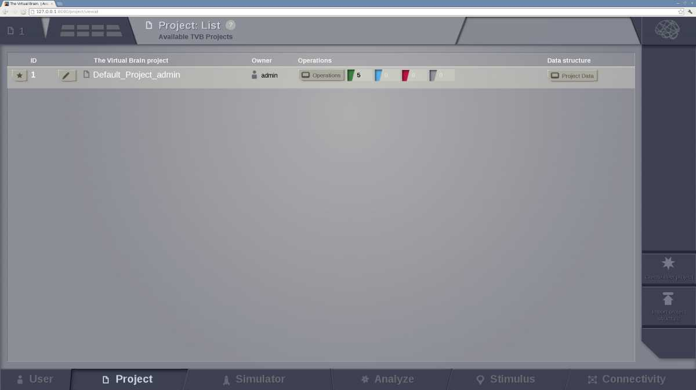
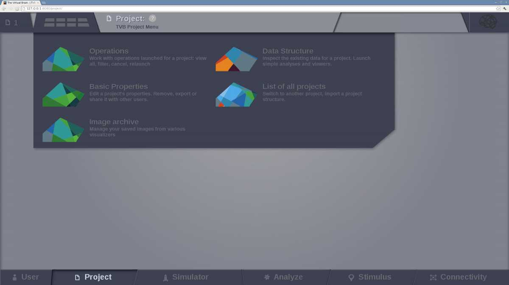
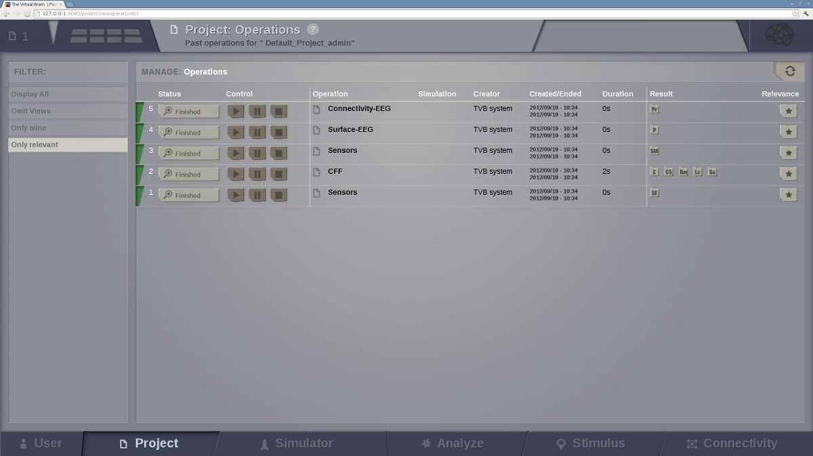
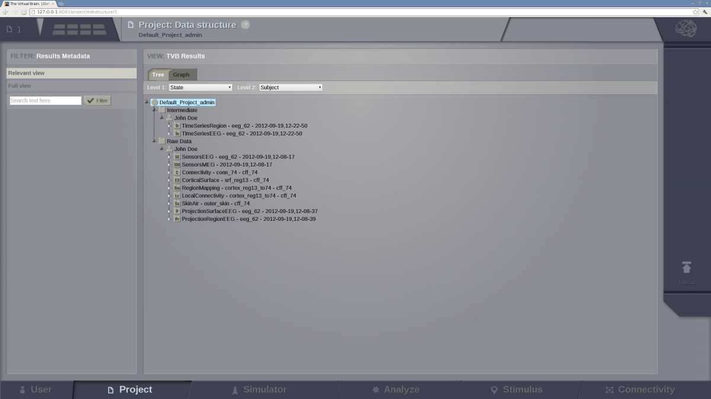
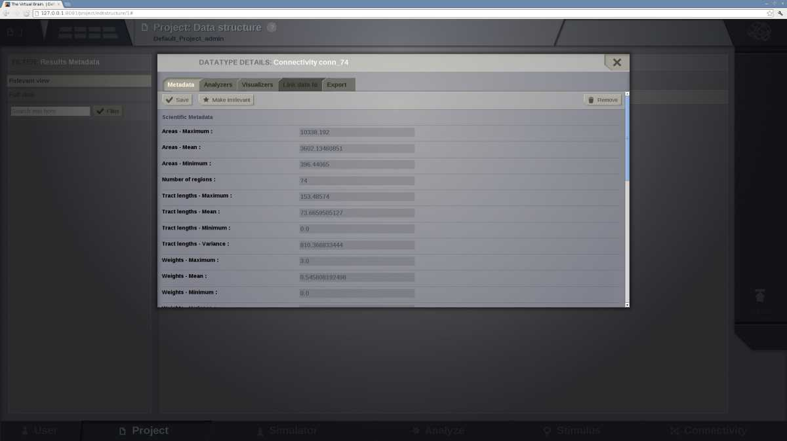

Tip
Projects are the way you organise data and simulations in |TVB|. They correspond to directories where related data sets and simulation results are stored. Information on the currently selected project is always available by clicking on the upper left corner of the interface:
The main information about the selected project.
The Project tab provides access to the projects that you have created within |TVB|. The second level menu in the top left corner, next to the Project number, allows you to navigate between five main subpages, each of which is described in more detail in the sections below:
- List of All Projects
- Basic Properties
- Operations
- Data Structure
- Saved Figures
The Project second level menu
This page provides a list of all the existing projects. Upon first user registration, a default project is created for you:

The default Project
The list of projects includes basic information about each project:
as well as providing mechanisms for:
In addition to the list of existing projects, the right hand menu provides a way to:
Enables you to edit the current project’s properties, you are also directed to this page when you first create a new project:

The Project Properties page
Note
You can also access this page for any existing project by clicking the edit button near a projects name on the List of all Projects page.
Fill in the form by:
- adding a project’s name (without spaces)
- writing a short description about the project.
Tip
If there are other users registered in the framework, you can choose to share the project with them by checking their respective “Visible for” boxes.
On the right side of the browser there is the Action Column from where you can:
- delete the project,
- export the project or,
- save changes.
Clicking on the “X” button takes you back to the List of All Projects page.
If you were creating a new project it should now be visible.
Warning
Project properties cannot be edited while operations are running!
|TVB| provides you with the possibility of saving image snapshots.
From this page you can manage all the images stored within the current working Project, as well as:
- edit figure title,
- create categories to group your images,
- search through your figure collection,
- visualize, download and delete your images.
Note
Only the current project figures will be available. If you want to visualize images from another project, you will have to switch to that project.

The Image Archive page
A table with the history of operations related to the currently selected project is displayed. From this board the user can filter, view, reload or cancel any operation:
The operation page with default operations
This page provides a way to navigate through the data associated with the current project, plus Upload capability.
On the most-right area of this page, an upload button appears. This launches an overlay with tabs for each type of TVB-compatible data:

The data upload overlay
Currently the data-types and/or structures supported for upload are:
Launching any uploader with success will generate you a new leaf in the Tree displayed centrally on this page.
The left-most area of the Data Structure page contains basic filters for the centrally displayed entities. We display fixed filters (entities declared relevant / irrelevant) of free-text filtering (when using the input text field and then pressing Button ‘Filter’). Filtering based on free-test searches into all fields of an entity, and it is case insensitive.
Data Structure page contains 2 options for viewing in the central area:
a Tree view:
The data structure of the default project – which automatically loads the default structural data necessary for a simulation.
and a Graph view:

A graph view of the project’s data-structure
The main target for the Graph view is to show you in a mixed manner both DataTypes and Operations. The edges that link the Graph are of type: ‘Operation generated DataType’ and ‘DataType is input for Operation’.
When switching from the Tree display to the Graph display, the same node (if DataType) remains selected. This way you could filter entities in the Tree display, check generic meta-data, then switch to the Graph display and see what Operation was parent for this entity.
Selecting a data node in the Tree structure causes an overlay to appear:
A data nodes overlay
From this overlay, the user can: